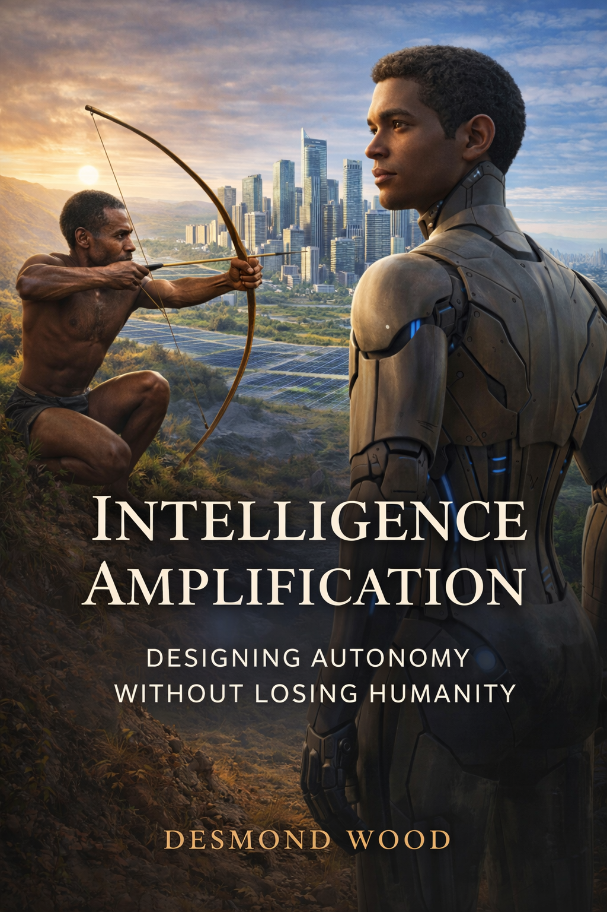

The Living Book
An evolving text about intelligence, amplification, and human possibility.
Read the public web edition, or open the illustrated edition on Apple Books.
Open in Apple Books ↗Chapter 01
What is Intelligence?
Intelligence is the ability to accomplish complex goals. It is not a static gift; it is an evolving capability: the power to adapt, learn, and transform both ourselves and our environment.
Human intelligence grew through tool use, increasingly capable cognitive architecture, and symbolic language. Language allowed abstract reasoning, shared imagination, culture, morality, and technology to compound across generations.
Artificial intelligence now mirrors that recursive ascent. Machines replicate and extend specific cognitive functions, creating a new layer in the long story of intelligence. Collective intelligence and augmented intelligence emerge when humans, institutions, and machines collaborate toward shared understanding.
Chapter 02
What is Amplification?
If intelligence is the engine, amplification is the force that boosts capability, sharpens decisions, accelerates learning, and broadens problem-solving horizons.
Amplification can arise through technology, collaboration, education, or subtle shifts in mental models. It is not about replacing human thought; it is about extending its reach and precision.
Amplification is never neutral. It magnifies what exists, whether insight or ignorance, empathy or exploitation. The question is not whether to amplify, but how to aim that power toward resilience and flourishing.
Chapter 03
Amplification in Practice
Amplification happens whenever the right conditions allow human intelligence to do more with less friction.
IA = (E × T × M) − B
E stands for Enablers, T for Technology, M for Mindset, and B for Barriers. Change any of these variables, and you change how far intelligence can reach.
Enablers include education, governance, social capital, and financial literacy. Technology is the lever. Mindset is the human multiplier. Barriers are the friction: inequality, distraction, misinformation, biased design, and cognitive overload.
Chapter 04
Humans, Machines, and the Dialectic of Intelligence
The comparison between humans and powerful AI is not a contest. It is a dialectic.
Humans possess emotional depth, culture, intuition, and lived experience. Powerful AI systems possess scale, speed, precision, and vast recall. Neither is complete on its own; amplification emerges in their interplay.
The task is orchestration: aligning human wisdom with machine capability so the amplification equation scales toward flourishing rather than fragmentation.
Chapter 05
Policy and Playbooks
If intelligence amplification is real, systems must be intentionally designed to sustain it.
Policy is not merely bureaucracy. It is architecture: the invisible structure that determines how intelligence can flow, compound, and be shared. Effective governance in the age of augmented intelligence rests on alignment, access, and accountability.
Playbooks translate policy into practice. They help individuals and organizations use AI as a thinking partner, clarify intention before automation, and preserve attention, discernment, and emotional clarity.
Chapter 06
Afterthoughts, Actionable Insights and Tips
This book is meant to be lived with, not merely read.
Think in systems. Every technology subtly shapes how you perceive the world, what you notice, and how you make decisions. Choosing tools deliberately becomes a way of choosing the mind you are cultivating.
Use AI recursively: summarize, test, simulate, and refine your understanding. Collaborate whenever possible, because shared inquiry multiplies feedback. Reflect frequently, because reflection converts experience into wisdom.
Chapter 07
Reflections
Amplification is not about machines replacing humanity; it is about humanity rediscovering the deeper range of its own potential.
We stand at a threshold where tools extend reasoning and networks synchronize cognition across space and time. The future will belong to those who amplify wisely: those who combine depth with scale, creativity with clarity, and speed with discernment.
If intelligence is the engine and amplification the turbocharger, then wisdom is the steering wheel.
Chapter 08
At the Threshold: Civilizational Possibilities
This section is reserved for the visual sequence in the illustrated living book.
The static web edition leaves the artwork out for now. The chapter remains here so the public text preserves the full structure of the book without carrying large image files.
Chapter 09
Author’s Note
This is not a static book in the conventional sense. It is a living book, an evolving artifact.
The work is designed to mark a specific moment in history: the early days of powerful artificial intelligence. It will be updated gradually as new insights and new realities emerge.
The central commitment remains simple: build better systems and cultivate better versions of ourselves, not only for our own benefit, but for the benefit of all sentient beings and the future of humanity.